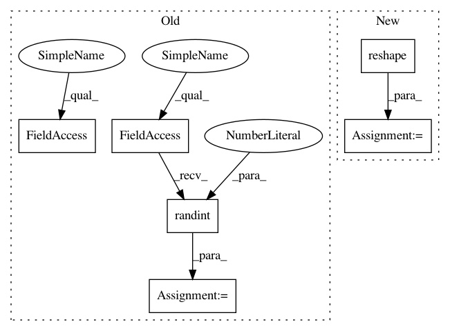

34eb970b4ee951887d991c95b7334a8c1c7d73eb,batchflow/tests/segmentation_metrics_test.py,,,#,5
Before Change
sample_length = 100
num_classes = 10
targets_sample = np.random.randint(0, num_classes - 2, sample_length)
noise_sample = np.random.binomial(1, 1/10, sample_length)
predics_sample = targets_sample + noise_sample
batch_size = 3
image_size = 2
pull_out = lambda s,x,y: s[:x*y*y].reshape(x, y, y)
targets = pull_out(targets_sample, batch_size, image_size)
predics = pull_out(predics_sample, batch_size, image_size)
@pytest.mark.parametrize("metrics_name", metrics_names)
class TestShape:
After Change
batch_size = 2
image_size = 2
num_classes = 3
targets = np.array([0, 1, 2, 2, 0, 0, 1, 1]).reshape(batch_size, image_size, image_size)
predics = np.array([0, 1, 1, 0, 2, 0, 1, 1]).reshape(batch_size, image_size, image_size)
onehots = np.eye(num_classes)[predics] //it"s basically like probs, just with all 0 and a single 1
@pytest.mark.parametrize("metrics_name", metrics_names)
In pattern: SUPERPATTERN
Frequency: 3
Non-data size: 6
Instances
Project Name: analysiscenter/batchflow
Commit Name: 34eb970b4ee951887d991c95b7334a8c1c7d73eb
Time: 2019-06-05
Author: steve.sinobi@ya.ru
File Name: batchflow/tests/segmentation_metrics_test.py
Class Name:
Method Name:
Project Name: deepchem/deepchem
Commit Name: c36de6cdea1f31a6a975d436b065475251f8caaf
Time: 2018-07-20
Author: rbharath@stanford.edu
File Name: deepchem/metrics/tests/test_genomics.py
Class Name: TestGenomicMetrics
Method Name: test_in_silico_mutagenesis
Project Name: analysiscenter/batchflow
Commit Name: b78edf5e661dfc0eb4d2092fdb9aff7bc679d3f6
Time: 2019-09-12
Author: nikita_007_94@mail.ru
File Name: batchflow/tests/regression_metrics_test.py
Class Name:
Method Name: test_both_zero
Project Name: analysiscenter/batchflow
Commit Name: 34eb970b4ee951887d991c95b7334a8c1c7d73eb
Time: 2019-06-05
Author: steve.sinobi@ya.ru
File Name: batchflow/tests/segmentation_metrics_test.py
Class Name:
Method Name: